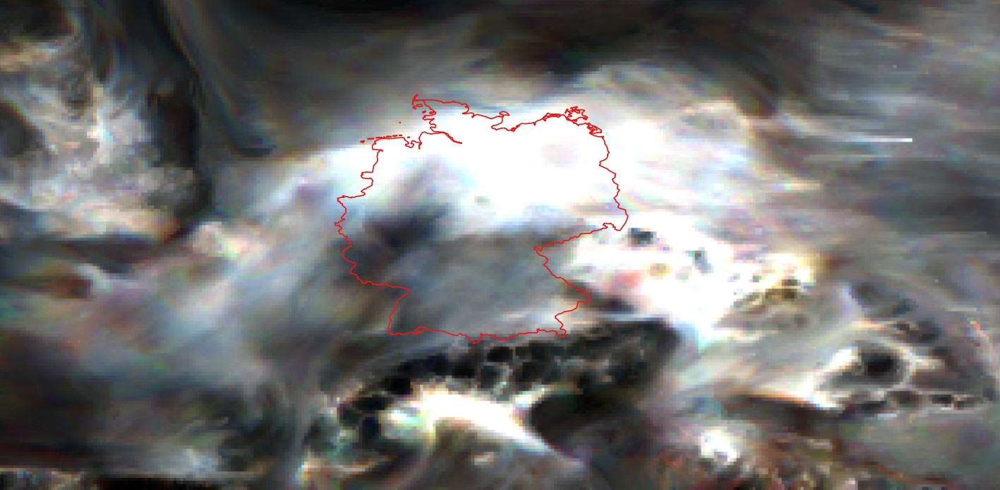

Fine Particulate Matter (PM2.5) Analysis
Overview
Fine particulate matter (PM2.5) consists of particles with an aerodynamic diameter of 2.5 micrometers or smaller. These particles are particularly concerning for human health because they can penetrate deep into the lungs and enter the bloodstream, causing cardiovascular and respiratory diseases. PM2.5 is considered one of the most harmful air pollutants by the World Health Organization.
Health Impacts
- Cardiovascular disease and heart attacks
- Stroke and irregular heart rhythm
- Respiratory infections and lung cancer
- Premature death in people with heart/lung disease
- Reduced lung function and development
Major Sources
- Vehicle emissions and road dust
- Industrial combustion processes
- Residential wood and coal burning
- Secondary particle formation in atmosphere
- Natural sources (wildfires, dust storms)
Concentration Classifications
PM2.5 concentrations are classified according to both EU annual limit values and WHO air quality guidelines. The WHO guidelines for PM2.5 are particularly stringent, reflecting the severe health impacts of fine particulate matter.
| Class | EU Classification (μg/m³) | WHO Classification (μg/m³) | Health Assessment |
|---|---|---|---|
| 1 | ≤ 5 | ≤ 5 | Good - WHO guideline level |
| 2 | 5-10 | 5-10 | Moderate - Above WHO guideline |
| 3 | 10-20 | 10-15 | Unhealthy for sensitive groups |
| 4 | 20-25 | 15-25 | Unhealthy - Approaches EU limit |
| 5 | > 25 | > 35 | Very unhealthy - Exceeds EU limit |
Temporal Analysis (2013-2022)
Annual Average Trends
PM2.5 average and maximum concentrations in settlement areas show an overall decreasing
trend
over the years, with some fluctuations. The lowest values were recorded in 2020,
largely due to reduced vehicle traffic and industrial activity during the COVID-19
restrictions.
The values correspond to the classes 2 and 3 (between 5 and 20 μg/m³) of the EU classification.
2022 Annual Average Difference
The 2022 Annual Average Difference from the 2017-2021 mean reveals spatial patterns of PM2.5 concentration changes: most of the territory presents stable values, with some areas showing slight decreases. Localized increases are visible mainly in the Rhur region (an highly urbanized and industrialized area, see Land Cover Map) and along the borders, the latter are likely due to data processing.
Land Cover Correlation
Land Cover Map
Land cover classification according to the ESA CCI LC 2022.
2022 Average Concentration
CAMS European Air Quality Reanalysis data.
The comparison between the land cover map and the concentration map shows the correlation of the higher value of pollution in corrispondence of the urban area and the lower concentration in corrispondence of the forests, with an increment in the agricolture zones.
Population Exposure Assessment
Bivariate Analysis
The bivariate map reveals critical areas where high PM2.5 concentrations coincide with
dense population clusters.
In the following are shown the legend and the map.
Exposure Distribution
The population exposure chart quantifies the number of people living in areas with
different PM2.5 concentration levels, highlighting the scale of public health
challenges.
The 86.8% of the population (679 286 21 people ) are exposed to a pollutant
level 2 instead the
13.2% (103 008 43 people) of the population are exposed to level 3 of WHO classification.
The bivariate map reveals critical environmental health hotspots where elevated PM2.5 concentrations intersect with
dense population clusters across Germany. The highest-risk populations are concentrated in western Germany,
particularly in industrial regions like the Ruhr Valley, where moderate-to-high pollution levels (categories 34-35, shown in dark tones)
coincide with significant population density.
Western Germany demonstrates a concerning pattern of widespread moderate pollution exposure affecting large
population centers (category 25, dark pink), indicating substantial public health implications due to the high number of
people exposed. In contrast, eastern Germany shows a different risk profile, with scattered dark spots representing areas
of higher pollution concentrations but affecting smaller population clusters (categories 31-33), suggesting more localized
pollution sources with limited demographic impact.
The map also identifies safer zones primarily in northern and some southern rural areas (categories 21-23, light tones)
where both population density and pollution levels remain low. This spatial analysis highlights the complex relationship
between urbanization, industrial activity, and air quality, emphasizing that the most critical public health concerns arise
not necessarily from the highest pollution levels, but from areas where moderate-to-high concentrations affect the largest number
of people.